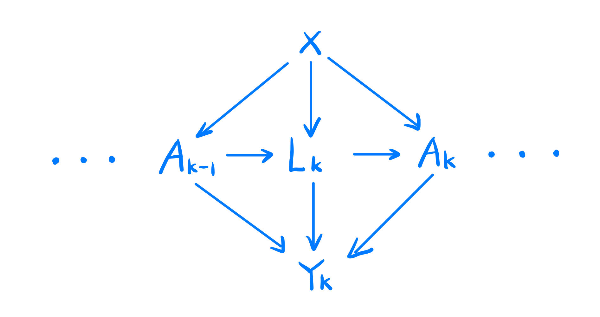
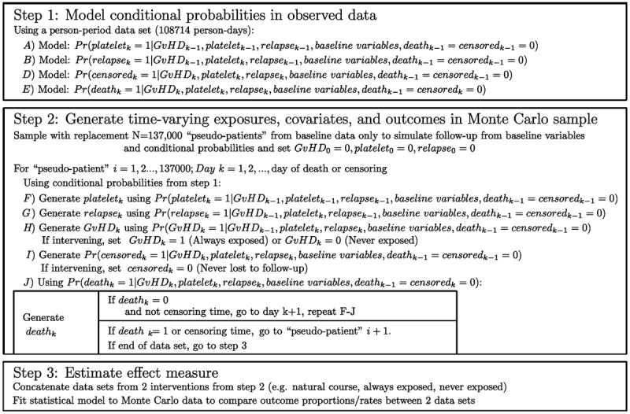

The original paper is The parametric G-formula for time-to-event data: towards intuition with a worked example.
The authors developed a new method for g-formula called parametric g-formula, and they applied it to a worked example about the mortality among the bone marrow transplant patients.
The author would like to know how much they could reduce mortality among bone marrow transplant patients by prescribing a new drug that prevents graft-versus-host disease(GvHD), a side effect of allogeneic marrow transplantation. Whether the patient gets the GvHD(i.e., whether the patient takes the prevention drug) is the treatment variable in this experiment.
Although GvHD is associated in observational studies with an increased risk of mortality, it also reduces the risk of leukemia relapse. It means that any drug that prevents GvHD may have the very undesirable side effect of increasing the rate of relapse.
Note that leukemia relapse is a risk factor for mortality and subsequent GvHD and it will also decrease the incidence of subsequent relapse, which means that leukemia relapse is a time-varying confounder.
The author would like to compare the mortality with and without the GvHD prevention drug with the time-varying confounder taken into consideration.
| Variable | Description |
|---|---|
| \(Y_k\) | indicator of death(1=yes,0=no) at the time \(k\) |
| \(A_k\) | indicator of GvHD (1= yes, 0=no) at the time \(k\) |
| \(L_k\) | indicator of normal platelet levels and relapse (1= normal platelet levels or relapse, 0=not in relapse or below normal platelets)) at the time \(k\) |
| \(V\) (or \(X\) in the DAG) | covariates of patients like sex and age |

From the last blog, we have the following formula for the estimation.
\[ \begin{aligned} E(Y_t(\bf{a}))&=\sum_{k=1}^{t}\sum_{a}\sum_{l}{Pr(Y_k=1|A_k=a_k,L_k=l_k,V=v_o,Y_{k-1}=0)\\ Pr(A_k=a,L_k=l_k,V=v_o,Y_{k-1}=0)}\because\text{conditional probability}\\ &=\sum_{k=1}^{t}\sum_{a}\sum_{l}{Pr(Y_k=1|A_k=a_k,L_k=l_k,V=v_o,Y_{k-1}=0)\times\\ Pr(A_k=a_k|A_{k-1}=a_{k-1},L_k,V=v_o,Y_{k-1}=0) \times \\ Pr(L_k=l_k|A_{k-1}=a,L_k=l_k,V=v_o,Y_{k-1}=0)\times\\ Pr(V=v_0|A_{k-1}=a_{k-1},L_k=l_k,Y_{k-1}=0)\times\\ Pr(Y_{k-1}=0)} \end{aligned} \]
The formula seems complex and have no closed form for the expectation. However, the authors provides a clever way to get its expectation using Monte-Carlo Simulation.
Step 1: the authors perform a pooled logistic regression model (i.e., a logistic model fit to all person periods )on the current dataset first to construct all the conditional probabilities in the formula. Also, they include time (i.e. days since transplant) in the model using a set of polynomial terms. The models for each covariate on day k were fit using only person-days for which the patient had not yet experienced each time-varying covariate on day k − 1.
Step 2: After they deriving all the conditional probabilities, the second step is to generate “pseudo-patients” from Monte Carlo sampling. Although they only have 137 patients, they re-sample 13700 pseudo-patients retaining only baseline covariates from these 137 patients with replacement.
Step 3: Next, they compute the probabilities of these binary covariates (\(Y, A, L\)) conditioning on the baseline covariates (\(V\)) and sample from the corresponding Bernoulli distribution to get its value. For example, we could simulate the value of \(Y_1\) (Whether the patient died on the first day from transplant) by \(Bernoulli(A_1,V,L_1)\). Also, the value of \(A_1\) and \(L_1\) are generated similarly.
From the simulation above, the authors generate 13700 Monte Carlo samples from this time-varying model, and it is easier to estimate the effects using these samples.
For instance, they concatenated the datasets from Step 2, estimating the hazard ratio by comparing the hazards in the “natural course” dataset with those in the “prevented” dataset. This was done by using an indicator variable for the dataset (1=“natural course,” 0=“prevented”) and using that indicator as the exposure variable in a Cox model.
To estimate confidence intervals for the hazard ratio, they repeated Steps 1-3 on 4000 samples of size 137 taken at random with replacement from the original data. The standard deviation (SD) of the 4000 log-hazard ratios approximates the standard error of the log-hazard ratio, and was used to calculate 95% confidence intervals (CIs) using the normal approximation: log-hazard ratio ±1.96*SD(log-hazard ratio).

In my opinion, the main feature of this algorithm is using Monte Carlo sampling to generate the pseudo-samples from the complex time-varying model. Thus, the simulated sample size should be large enough. Thus, they generated 13700 Monte Carlo samples by re-sampling and simulated their mortality changes over time.
Another significant factor is the original sample size because they build the regression model about the conditional probabilities from the original data. If the original dataset is not large enough, the estimations of parameters in the regression model are not valid, leading to a non-consistent result.
Also, the choice of the regression model makes a big difference. The authors compare the logistic model with many other models like polynomial ones, and they find the logistic model works best among all the alternatives. If we want to reproduce their algorithm, we need to find the most suitable regression model for our datasets.
Finally, another noticable detail is that the covariates are mostly binary, which means we can build the conditional probability models easily since the number of the combination of the conditions(\(A,Y,L\)) is finite. If not, the conditional probability model will be much more complex and could have the “curse of dimensionality”.
The authors made a comparison with standard methods and found that their model indeed controlled the confounding variables.
Specifically, the author estimated crude and covariate conditional hazard ratios (and 95% confidence intervals) for the effect of graft-versus-host disease on mortality using a Cox proportional hazards model for time-varying data (with observed data).22 They controlled for possible confounding by baseline and time-varying covariates by including indicator terms in the Cox model. A test of proportional hazards in crude and regression-adjusted models indicated that a summary hazard ratio over the five-year course of the study was adequate.
Also, their simulation uses Monte Carlo sampling with a large sample size, which is theoretically unbiased as long as their regression model is correct. In addition, this method avoids the complex probability computation in such model and uses a more intuitive way to generate pseudo-samples.